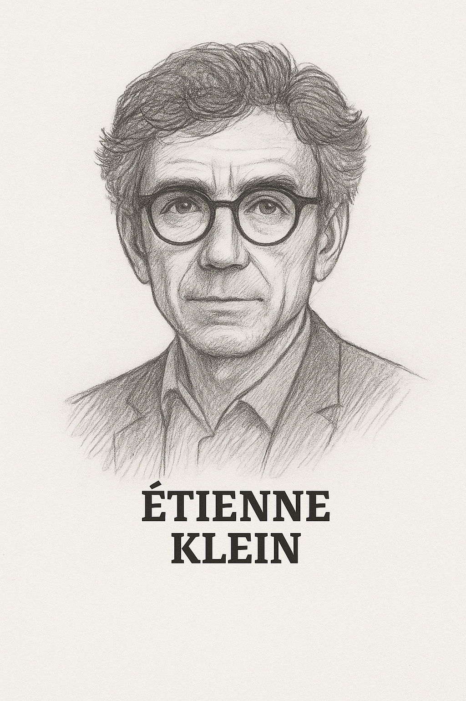
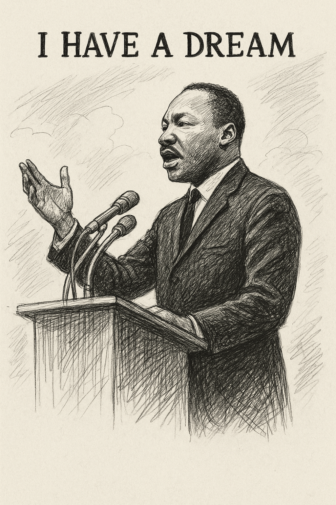

Nobel de physique 1921 - Médaille Copley 1925 - Médaille d'or de la Royal Astronomical Society 1926 - Médaille Franklin 1935

Astrophysicien et philosophe des sciences

Médaille Fields 2010, la plus haute distinction en mathématique

Nobel de physique - 2022. Ce type a prouvé qu'Einstein avait tors au niveau de l'intrication quantique. -FASCINANT-

"Nous sommes des poussières d'étoiles"

Travaux considérables sur les trous noirs

John. F. Kennedy

Grand philosophe des sciences

Neil Armstrong

Martin Luther-King

Écrivain irlandais célèbre - 1854

Grand poète anglais - 1564